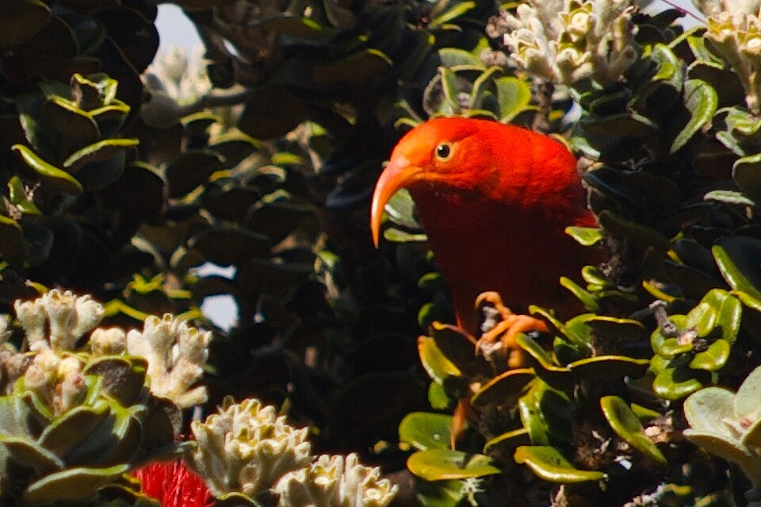

Hosmer Grove
Place: Hosmer Grove, Haleakalā National Park, Maui
Type: Experimental forest / birdwatching site / hiking area
Story it tells: A forestry experiment that transformed part of Haleakalā's slopes and now serves as a meeting point between introduced forests and native Hawaiian ecosystems.

Hosmer Grove is a small forest and campground located near the summit district of Haleakalā National Park. The grove is named for Ralph Hosmer, Hawaiʻi's first Territorial Forester, who sought to determine whether introduced trees could support a future timber industry in the islands.
Beginning in 1909, Hosmer imported and planted dozens of tree species from around the world, including pines, cedars, spruce, and eucalyptus. Of the 86 species introduced, only about 20 survived long term. Some were unable to adapt to Haleakalā's climate and soils, while others were damaged by storms or failed to reproduce successfully.
A few species proved remarkably successful. Monterey pine, Mexican weeping pine, eucalyptus, and other introduced trees spread beyond the original planting area and are now considered threats to native ecosystems within the national park. As a result, Hosmer Grove has become an unusual place where visitors can observe both the successes and unintended consequences of Hawaiʻi's early forestry experiments.
The grove is also one of the best birdwatching locations on Maui. Native honeycreepers such as the ʻiʻiwi, ʻapapane, Hawaiʻi ʻamakihi, and Maui alauahio are regularly seen among the trees. Their presence highlights the importance of Haleakalā's remaining native habitats and watersheds.
A short interpretive trail leads visitors from the introduced forest into native Hawaiian shrubland, creating a striking contrast between landscapes shaped by human intervention and those that more closely resemble the mountain's historic ecology. Along the route, visitors can see ʻōhiʻa, koa, and other native species that once covered much of the mountain.
Today, Hosmer Grove serves as both a recreational area and a living lesson in conservation. The grove preserves the legacy of Ralph Hosmer's forestry experiment while illustrating the ongoing effort to protect and restore Haleakalā's native ecosystems.